TimeSeries: 基本#
このノートブックでは、gwpy を拡張した gwexpy の TimeSeries クラスに追加された新しいメソッドとその使い方を解説します。
gwexpy は GWpy との高い互換性を維持しつつ、信号処理、統計解析、他ライブラリとの相互運用性を大幅に強化しています。
目次#
環境セットアップ
信号処理と復調 (Hilbert, Phase, Demodulation)
スペクトル解析と相関 (FFT, Transfer Function, xcorr)
ヒルベルト・ファン変換 (HHT)
統計・前処理 (Impute, Standardize, ARIMA, Hurst, Rolling)
リサンプリングと再インデックス (asfreq, resample)
関数によるフィッティング (fit)
相互運用性 (Pandas, Xarray, Torch, and more)
1. 環境セットアップ#
まずは必要なライブラリをインポートし、デモ用のサンプルデータを生成します。
import warnings
warnings.filterwarnings("ignore", category=UserWarning)
warnings.filterwarnings("ignore", category=DeprecationWarning)
import matplotlib.pyplot as plt
import numpy as np
np.random.seed(42)
from astropy import units as u
from gwexpy.noise.wave import chirp, exponential, gaussian, sine
from gwexpy.plot import Plot
from gwexpy.timeseries import TimeSeries
# Generate two toy channels: one nearly stationary line and one drifting chirp so later diagnostics have a clear physical target.
fs = 100
duration = 5.0
# Restore 't' for compatibility with downstream cells if they use it
t = np.arange(0, duration, 1 / fs)
# Sensor 1 behaves like a stable calibration line plus measurement noise, which is useful as a demodulation reference.
s1 = sine(duration=duration, sample_rate=fs, frequency=10, amplitude=1.0)
n1 = gaussian(duration=duration, sample_rate=fs, std=0.2)
ts1 = s1 + n1
ts1.name = "Sensor 1"
ts1.override_unit("V")
# Sensor 2 mimics a non-stationary line whose frequency sweeps and whose amplitude grows, so Hilbert-based tracking has a meaningful physical trend to recover.
s2 = chirp(duration=duration, sample_rate=fs, f0=5, f1=25, t1=duration)
env = exponential(
duration=duration, sample_rate=fs, tau=2.0, decay=False, amplitude=0.2
)
ts2 = s2 * env
ts2.name = "Chirp Signal"
ts2.override_unit("V")
2. 信号処理と復調#
gwexpy では、ヒルベルト変換や包絡線、瞬時周波数の計算、さらにロックインアンプのような復調機能が統合されています。
ヒルベルト変換と包絡線#
hilbert と envelope を使用します。
# Build the analytic signal so amplitude and phase can be separated without cancelling positive and negative frequency content.
ts_analytic = ts2.hilbert()
# The envelope isolates the slow amplitude modulation riding on top of the oscillatory carrier.
ts_env = ts2.envelope()
plot = Plot(ts2, ts_env, figsize=(10, 4))
ax = plot.gca()
ax.get_lines()[0].set_label("Original (Chirp)")
ax.get_lines()[0].set_alpha(0.5)
ax.get_lines()[1].set_label("Envelope")
ax.get_lines()[1].set_color("red")
ax.get_lines()[1].set_linewidth(2)
ax.legend()
ax.set_title("Hilbert Transform and Envelope")
plt.show()
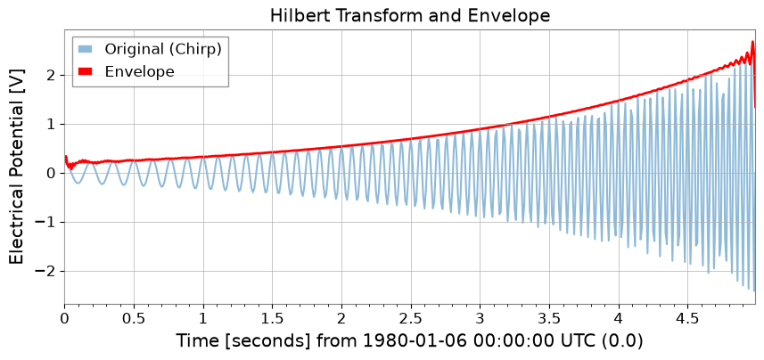
瞬時位相と瞬時周波数#
instantaneous_phase と instantaneous_frequency を使用します。位相のアンラップ (unwrap) や度の単位 (deg) も指定可能です。
# Unwrap the phase so the chirp appears as continuous phase accumulation instead of artificial 2pi jumps.
phase_rad = ts2.instantaneous_phase(unwrap=True)
phase_deg = ts2.instantaneous_phase(deg=True, unwrap=True)
# Convert the phase slope into instantaneous frequency to follow the drifting line in time.
freq = ts2.instantaneous_frequency()
plot = Plot(phase_rad, freq, separate=True, sharex=True, figsize=(10, 6))
ax = plot.axes
ax[0].set_ylabel("Phase [rad]")
ax[0].set_title("Instantaneous Phase (Unwrapped)")
ax[1].set_ylabel("Frequency [Hz]")
ax[1].set_title("Instantaneous Frequency")
plt.show()

混合と復調 (Mix-down, Baseband, Lock-in)#
特定の周波数成分を抽出したり、直流成分へ落とし込むための機能です。
# 1. Mix down to 10 Hz so the narrowband line is shifted to baseband, where slow amplitude and phase changes are easier to measure.
ts_mixed = ts1.mix_down(f0=10)
# 2. Baseband adds low-pass filtering and decimation so the retained samples describe only the slow envelope, not the carrier itself.
ts_base = ts1.baseband(f0=10, lowpass=5, output_rate=20)
# 3. Lock-in detection averages against a phase-matched reference, which suppresses broadband noise while preserving the coherent 10 Hz component.
amp, ph = ts1.lock_in(f0=10, stride=0.1) # Output average every 0.1 seconds
res_complex = ts1.lock_in(
f0=10, stride=0.1, output="complex"
) # Output as complex numbers
print(amp)
plot = Plot(amp, ph, separate=True, sharex=True, figsize=(10, 6))
ax = plot.axes
ax[0].get_lines()[0].set_label("Amplitude")
ax[0].axhline(1.0, color="gray", linestyle="--", label="Theoretical (Sine amp=1)")
ax[0].set_ylabel("Amplitude")
ax[0].legend()
ax[1].get_lines()[0].set_color("orange")
ax[1].get_lines()[0].set_label("Phase [deg]")
ax[1].set_ylabel("Phase [deg]")
plot.figure.suptitle("Lock-in Amplification Result at 10Hz")
plt.show()
TimeSeries([1.02452531, 1.0948711 , 0.9557201 , 0.91971141,
0.95357018, 0.99130145, 0.89527571, 0.95256296,
1.12990112, 0.97831457, 0.97108626, 1.04892235,
0.89742177, 0.94178202, 0.93168157, 1.06453244,
1.14534315, 0.92303322, 1.11196127, 1.03933192,
1.01664858, 1.10900749, 0.89334958, 1.0927776 ,
0.97065155, 0.89192484, 0.87183465, 0.97576732,
1.05570409, 1.1750107 , 0.99519194, 0.80984704,
0.79916471, 0.89492114, 0.9887024 , 0.87473604,
0.95926644, 1.02241414, 0.87963528, 1.10529247,
0.98262057, 0.98710805, 1.06540862, 1.16131494,
0.95555135, 1.1203731 , 1.15345544, 0.99370787,
1.00432433, 0.88714167],
unit: V,
t0: 0.0 s,
dt: 0.1 s,
name: Sensor 1,
channel: None)
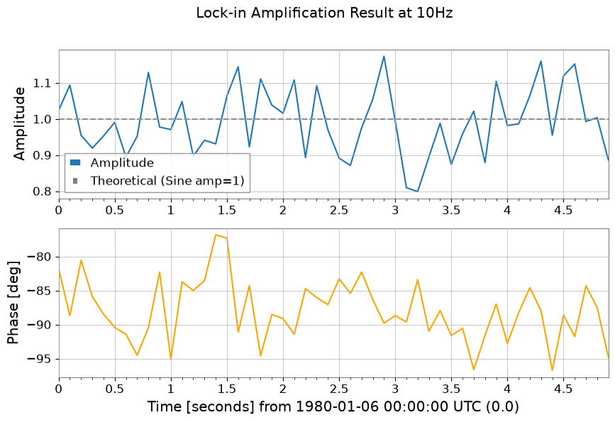
3. スペクトル解析と相関#
GWpy の機能を継承しつつ、過渡信号向けの mode="transient" FFT と、FFT 比を直接とる伝達関数計算が追加されています。
拡張された FFT#
mode="transient" を使うと、ゼロパディング、高速長への調整、左右個別のパディング指定が可能になります。
# Standard FFT is appropriate when the signal is roughly stationary over the full record and you want GWpy-compatible normalization.
fs_gwpy = ts1.fft()
# Transient mode is better for short-lived responses because padding reduces edge leakage that would otherwise distort amplitudes.
# pad_left/pad_right extend the event in time, and nfft_mode="next_fast_len" keeps that protection computationally cheap.
fs_trans = ts1.fft(
mode="transient", pad_left=0.5, pad_right=0.5, nfft_mode="next_fast_len"
)
plot = Plot(fs_gwpy.abs(), fs_trans.abs(), yscale="log", xlim=(0, 50), figsize=(10, 4))
ax = plot.gca()
ax.get_lines()[0].set_label("Standard FFT")
ax.get_lines()[1].set_label("Transient FFT (Padded)")
ax.get_lines()[1].set_alpha(0.7)
ax.legend()
ax.set_title("Comparison of FFT modes")
plt.show()
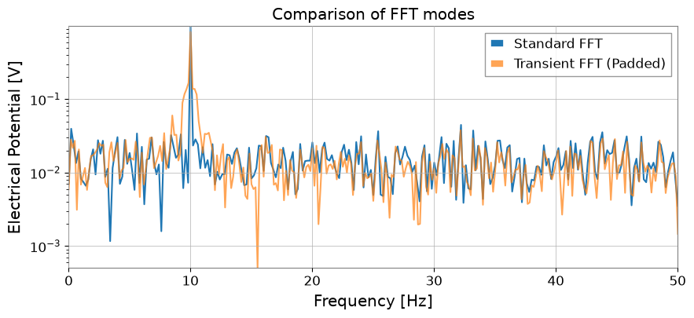
伝達関数 (Transfer Function) と相互相関 (xcorr)#
transfer_function では、Welch 法（mode="steady"）だけでなく、FFT 比を直接とる方法（mode="transient"）も選択できます。
# Estimate the transfer function to ask whether Sensor 1 can linearly explain features in the chirping channel across frequency.
tf_welch = ts2.transfer_function(ts1, fftlength=1)
tf_fft = ts2.transfer_function(
ts1, mode="transient"
) # Full-span FFT ratio (useful for transient response analysis)
# Cross-correlation checks whether the two channels line up in time, which is a first sanity check before treating one as a witness for the other.
corr = ts1.xcorr(ts2, maxlag=0.5, normalize="coeff")
plot = Plot(figsize=(10, 6))
ax1 = plot.add_subplot(2, 1, 1)
ax1.semilogy(tf_welch.frequencies, np.abs(tf_welch), label="Welch method")
ax1.semilogy(tf_fft.frequencies, np.abs(tf_fft), label="Direct FFT ratio", alpha=0.5)
ax1.set_title("Transfer Function Magnitude")
ax1.legend()
ax2 = plot.add_subplot(2, 1, 2)
lag = corr.times.value - corr.t0.value
ax2.plot(lag, corr)
ax2.set_title("Cross-Correlation (normalized)")
ax2.set_xlabel("Lag [s]")
plt.show()
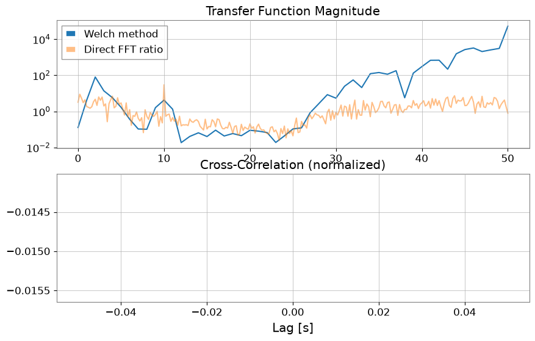
STLT (Short-Time Laplace Transform)#
STLT（短時間ラプラス変換）は、信号の中で時間とともに変化する局所構造を抽出するための変換です。
gwexpy では、STLT の結果は (時間 × シグマ × 周波数) を軸とする 3 次元変換で、TimePlaneTransform / LaplaceGram として表現されます。
以下は、stlt メソッドで STLT を計算し、特定時刻のスライス（Plane2D）を取り出す例です。この例では、任意の周波数点で STLT を評価するための frequencies（Hz）指定もあわせて示します。
# Data preparation (for demonstration)
import numpy as np
from gwexpy.plot import Plot
t = np.linspace(0, 10, 1000)
data = TimeSeries(np.sin(2 * np.pi * 1 * t), times=t * u.s, unit="V", name="Demo Data")
# STLT
# stride: time step, window: analysis window length
freqs = np.array([0.5, 1.0, 1.5]) # Hz
stlt_result = data.stlt(stride="0.5s", window="2s", frequencies=freqs)
print(f"Kind: {stlt_result.kind}")
print(f"Shape: {stlt_result.shape} (Time x Sigma x Frequency)")
print(f"Time Axis: {len(stlt_result.times)} steps")
print(f"Sigma Axis: {len(stlt_result.axis1.index)} bins")
print(f"Frequency Axis: {len(stlt_result.axis2.index)} bins")
# Extract plane at specific time (t=5.0s)
plane_at_5s = stlt_result.at_time(5.0 * u.s)
print(f"Plane at 5.0s shape: {plane_at_5s.shape}")
# Plane2D Confirm behavior as Plane2D
print(f"Axis 1: {plane_at_5s.axis1.name}")
print(f"Axis 2: {plane_at_5s.axis2.name}")
Kind: stlt
Shape: (17, 1, 3) (Time x Sigma x Frequency)
Time Axis: 17 steps
Sigma Axis: 1 bins
Frequency Axis: 3 bins
Plane at 5.0s shape: (1, 3)
Axis 1: sigma
Axis 2: frequency
4. ヒルベルト・ファン変換 (HHT)#
非線形・非定常な信号解析のためのヒルベルト・ファン変換 (HHT) 機能です。経験的モード分解 (EMD) とヒルベルトスペクトル解析を組み合わせています。
import warnings
with warnings.catch_warnings():
warnings.simplefilter('ignore')
# HHT (Hilbert-Huang Transform)
# Execute Empirical Mode Decomposition (EMD) and extract IMFs (Intrinsic Mode Functions)
# Note: Requires PyEMD (EMD-signal) : `pip install EMD-signal`
try:
import os
os.environ["TF_CPP_MIN_LOG_LEVEL"] = "2"
# EMDExecute EMD (returns dictionary)
# method="emd" (standard EMD) or "eemd" (Ensemble EMD)
# Here we use ts2 (example with chirp signal)
imfs = ts2.emd(method="emd", max_imf=3)
print(f"Extracted IMFs: {list(imfs.keys())}")
# Plot IMFs
sorted_keys = sorted(
[k for k in imfs.keys() if k.startswith("IMF")], key=lambda x: int(x[3:])
)
if "residual" in imfs:
sorted_keys.append("residual")
# gwexpy.plot.Plot for batch plotting
plot_data = [ts2] + [imfs[k] for k in sorted_keys]
plot = Plot(*plot_data, separate=True, sharex=True, figsize=(10, 8))
# Original settings
ax0 = plot.axes[0]
ax0.get_lines()[0].set_label("Original")
ax0.get_lines()[0].set_color("black")
ax0.legend(loc="upper right")
ax0.set_title("Empirical Mode Decomposition")
# IMF settings
for i, key in enumerate(sorted_keys):
ax = plot.axes[i + 1]
ax.get_lines()[0].set_label(key)
ax.legend(loc="upper right")
plt.show()
except ImportError:
print("EMD-signal not installed. Skipping HHT demo.")
except Exception as e:
print(f"HHT Error: {e}")
Extracted IMFs: ['IMF1', 'IMF2', 'IMF3', 'residual']
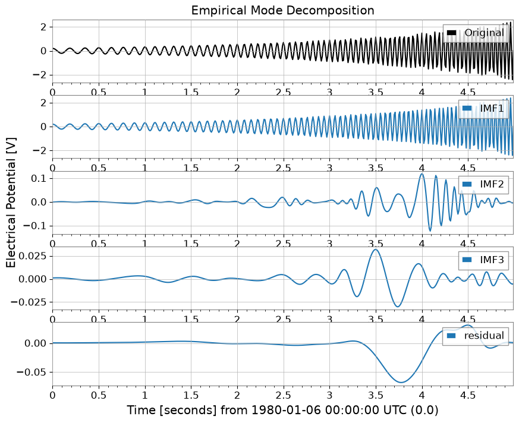
5. 統計・前処理#
欠損値補完、標準化、ARIMA モデル、ハースト指数、ローリング統計量が TimeSeries のメソッドとして利用できます。
# Test data with missing values
ts_nan = ts1.copy()
ts_nan.value[100:150] = np.nan
# 1. impute: Missing value imputation (interpolation, etc.)
ts_imputed = ts_nan.impute(method="interpolate")
# 2. standardize: Standardization (z-score, robust, etc.)
ts_z = ts1.standardize(method="zscore")
ts_robust = ts1.standardize(method="zscore", robust=True) # Use Median/IQR
plot = Plot(ts_nan, ts_imputed, figsize=(10, 4))
ax = plot.gca()
ax.get_lines()[0].set_label("with NaNs")
ax.get_lines()[0].set_color("red")
ax.get_lines()[0].set_alpha(0.3)
ax.get_lines()[1].set_label("Imputed")
ax.get_lines()[1].set_linestyle("--")
ax.legend()
ax.set_title("Missing Value Imputation")
plt.show()
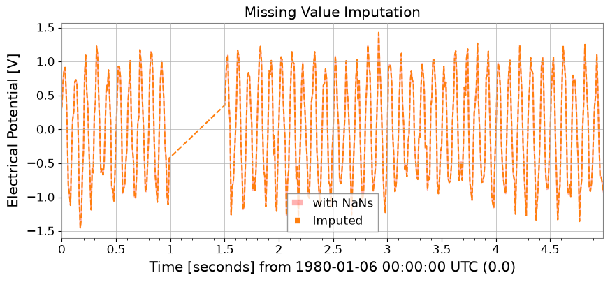
ピーク検出 (Find Peaks)#
scipy.signal.find_peaks をラップして、時系列データのピークを検出します。
# Peak Detection (Find Peaks)
# Parameters such as height, threshold, distance, prominence, and width can be specified
# Can also specify thresholds with units
# Find peaks in ts2 (chirp + sine)
peaks, props = ts2.find_peaks(height=0.0, distance=50)
print(f"Found {len(peaks)} peaks")
if len(peaks) > 0:
print("First 5 peaks:", peaks[:5])
# Plot
plot = ts2.plot(figsize=(12, 4))
ax = plot.gca()
ax.scatter(
peaks.times.value,
peaks.value,
marker="x",
color="red",
s=100,
label="Peaks",
zorder=10,
)
ax.legend(loc="upper right")
ax.set_title("Peak Detection Result")
plt.show()
Found 10 peaks
First 5 peaks: TimeSeries([ 0.21779568, -0.28157556, -0.37097234, 0.48196067,
-0.61630987],
unit: V,
t0: 0.19 s,
dt: 0.51 s,
name: Chirp Signal_peaks,
channel: None)

ARIMA モデルとハースト指数#
注意: これらの機能には statsmodels や hurst などのライブラリが必要です。
import warnings
with warnings.catch_warnings():
warnings.simplefilter('ignore')
try:
import os
os.environ["TF_CPP_MIN_LOG_LEVEL"] = "2"
# 3. fit_arima: ARIMA(1,0,0) fitting and forecasting
model = ts1.fit_arima(order=(1, 0, 0))
resid = model.residuals()
forecast, conf = model.forecast(steps=30)
plot = Plot(ts1.tail(100), forecast, figsize=(10, 4))
ax = plot.gca()
ax.get_lines()[0].set_label("Measured")
ax.get_lines()[1].set_label("Forecast")
ax.get_lines()[1].set_color("orange")
# Fill between
ax.fill_between(
conf["lower"].times.value,
conf["lower"].value,
conf["upper"].value,
alpha=0.2,
color="orange",
)
ax.set_title("ARIMA(1,0,0) Fit & Forecast")
ax.legend()
plt.show()
except Exception as e:
print(f"ARIMA skipping: {e}")
try:
import os
os.environ["TF_CPP_MIN_LOG_LEVEL"] = "2"
# 4. hurst / local_hurst: Hurst exponent (indicator of long-range correlation)
h_val = ts1.hurst()
h_detail = ts1.hurst(return_details=True) # With detailed information
h_local = ts1.local_hurst(window=1.0) # Evolution with 1-second window
plot = Plot(h_local, figsize=(10, 4))
ax = plot.gca()
ax.get_lines()[0].set_label("Local Hurst")
ax.axhline(h_val, color="red", linestyle="--", label=f"Global H={h_val:.2f}")
ax.set_ylim(0, 0.2)
ax.set_title("Hurst Exponent Analysis")
ax.legend()
plt.show()
except Exception as e:
print(f"Hurst skipping: {e}")
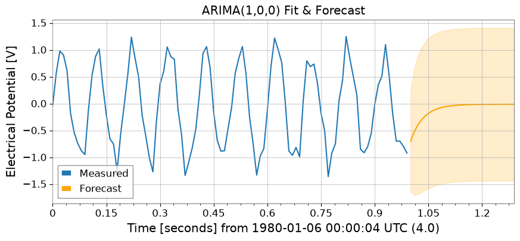
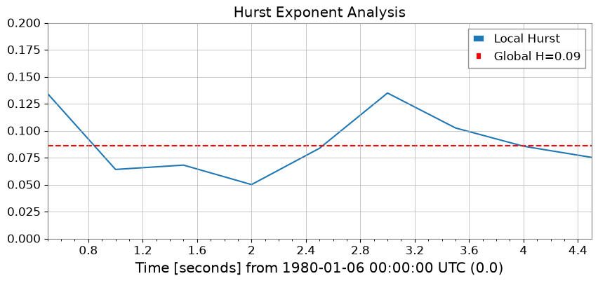
ローリング統計量 (Rolling Statistics)#
Pandas と同様に、rolling_mean・std・median・min・max が利用できます。
rw = 0.5 * u.s # 0.5 second window
rmean = ts1.rolling_mean(rw)
rstd = ts1.rolling_std(rw)
rmed = ts1.rolling_median(rw)
rmin = ts1.rolling_min(rw)
rmax = ts1.rolling_max(rw)
plot = Plot(ts1, rmean, rmed, figsize=(10, 4))
ax = plot.gca()
ax.get_lines()[0].set_label("Original")
ax.get_lines()[0].set_alpha(0.3)
ax.get_lines()[1].set_label("Rolling Mean")
ax.get_lines()[1].set_color("blue")
ax.get_lines()[2].set_label("Rolling Median")
ax.get_lines()[2].set_color("green")
ax.get_lines()[2].set_linestyle("--")
ax.fill_between(
rmean.times.value,
rmean.value - rstd.value,
rmean.value + rstd.value,
alpha=0.1,
color="blue",
)
ax.legend()
ax.set_title("Rolling Statistics (Window=0.5s)")
plt.show()
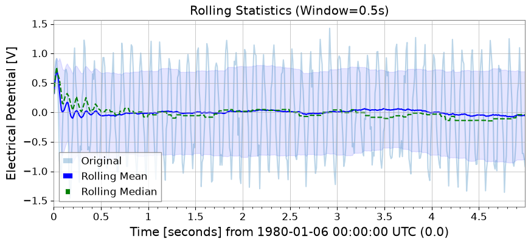
6. リサンプリングと再インデックス#
asfreq メソッドで固定グリッドへの割り当てが、resample メソッドで「時間ビンごとの集約」ができます。
# 1. asfreq: Reindex with Pandas-like naming conventions (e.g. '50ms')
ts_reindexed = ts1.asfreq("50ms", method="pad")
Plot(ts1, ts_reindexed)
plt.legend(["Original", ".asfreq('50ms', method='pad')"])
<matplotlib.legend.Legend at 0x7ff83aed1b90>
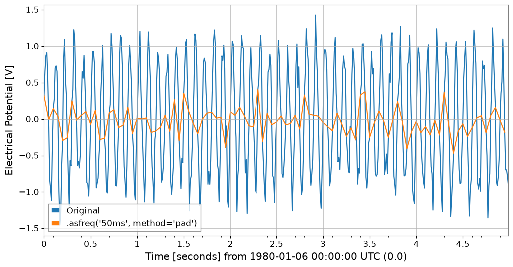
# 2. resample:
# If you specify a number (10Hz) , signal processing resampling (GWpy standard)
ts_sig = ts1.resample(10)
# If you specify a string ('200ms') , statistics for each time bin (new feature)
ts_binned = ts1.resample("200ms") # Default is mean
# Plot doesn't have a direct 'step' method equivalent in args, so we use ax.step or pass to plot
# However, kwarg 'drawstyle'='steps-post' works in plot()? gwpy Plot wraps matplotlib.
# Let's assume we can modify axes after creation or use standard plot for simplicity if appropriate, but step is specific.
# Better strategy: Create Plot instance, then use ax.step
plot = Plot(figsize=(10, 4))
ax = plot.gca()
ax.plot(ts1, alpha=0.6, label="Original (100Hz)")
ax.step(
ts_binned.times,
ts_binned.value,
where="post",
label="Binned Mean (200ms)",
linewidth=2,
)
ax.legend()
ax.set_title("Resampling: Signal Resampling vs Time Binning")
plt.show()
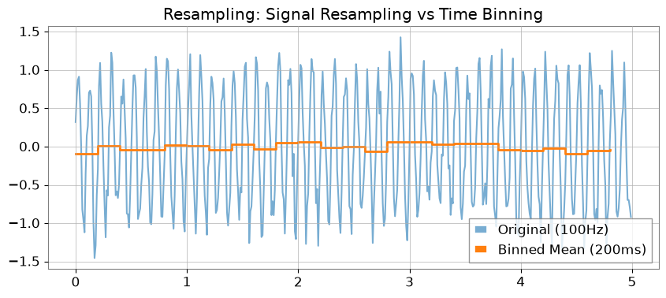
7. 関数によるフィッティング#
gwexpy は iminuit ベースの強力なフィッティング機能を提供します。GWpy 本来のクラスを汚染しないよう、.fit() メソッドはオプトイン方式です。
from gwexpy.fitting.models import damped_oscillation
# Generate a damped, noisy oscillation for the fitting demo
t_fit = np.linspace(0, 10, 1000)
y_fit = 0.8 * np.exp(-t_fit / 2.0) * np.sin(2 * np.pi * 1.5 * t_fit)
y_fit += 0.05 * np.random.randn(t_fit.size)
sig = TimeSeries(y_fit, times=t_fit * u.s, unit="V", name="Damped Oscillation")
# Fit with damped oscillation model (initial values passed via p0)
result = sig.fit(damped_oscillation, p0={"A": 0.8, "tau": 2.0, "f": 1.5, "phi": 0.0})
# Display result (iminuit format)
print(result)
# Get best-fit curve
# Note: x_data is the time array corresponding to data points
x_data = sig.times.value
best_fit = result.model(x_data)
# Plot
plot = sig.plot(label="Noisy Signal")
ax = plot.gca()
ax.plot(sig.times, best_fit, label="Best Fit", color="red", linestyle="--")
ax.legend()
ax.set_title("Damped Oscillation Fit")
plt.show()
┌─────────────────────────────────────────────────────────────────────────┐
│ Migrad │
├──────────────────────────────────┬──────────────────────────────────────┤
│ FCN = 2.374 (χ²/ndof = 0.0) │ Nfcn = 83 │
│ EDM = 5.49e-05 (Goal: 0.0002) │ │
├──────────────────────────────────┼──────────────────────────────────────┤
│ Valid Minimum │ Below EDM threshold (goal x 10) │
├──────────────────────────────────┼──────────────────────────────────────┤
│ No parameters at limit │ Below call limit │
├──────────────────────────────────┼──────────────────────────────────────┤
│ Hesse ok │ Covariance accurate │
└──────────────────────────────────┴──────────────────────────────────────┘
┌───┬──────┬───────────┬───────────┬────────────┬────────────┬─────────┬─────────┬───────┐
│ │ Name │ Value │ Hesse Err │ Minos Err- │ Minos Err+ │ Limit- │ Limit+ │ Fixed │
├───┼──────┼───────────┼───────────┼────────────┼────────────┼─────────┼─────────┼───────┤
│ 0 │ A │ 0.78 │ 0.20 │ │ │ │ │ │
│ 1 │ tau │ 2.1 │ 0.7 │ │ │ │ │ │
│ 2 │ f │ 1.497 │ 0.027 │ │ │ │ │ │
│ 3 │ phi │ 0.03 │ 0.25 │ │ │ │ │ │
└───┴──────┴───────────┴───────────┴────────────┴────────────┴─────────┴─────────┴───────┘
┌─────┬─────────────────────────────────────┐
│ │ A tau f phi │
├─────┼─────────────────────────────────────┤
│ A │ 0.0399 -0.11 0.4e-3 -0.01 │
│ tau │ -0.11 0.555 -1.0e-3 0.01 │
│ f │ 0.4e-3 -1.0e-3 0.000741 -4.8e-3 │
│ phi │ -0.01 0.01 -4.8e-3 0.0621 │
└─────┴─────────────────────────────────────┘
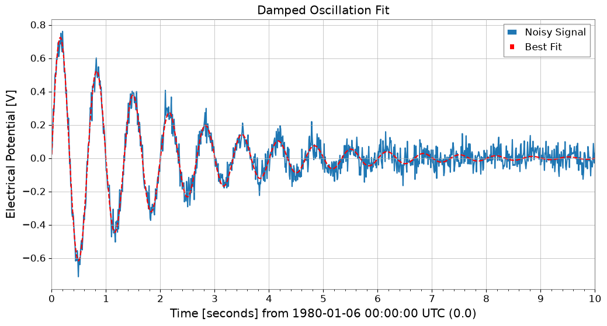
8. 相互運用性#
主要なデータサイエンス・機械学習ライブラリとの相互変換が非常にスムーズに行えます。
import warnings
with warnings.catch_warnings():
warnings.simplefilter('ignore')
# Pandas & Xarray
try:
import os
os.environ["TF_CPP_MIN_LOG_LEVEL"] = "2"
df = ts1.to_pandas(index="datetime")
ts_p = TimeSeries.from_pandas(df)
print("Pandas interop OK")
display(df)
except ImportError:
pass
try:
import os
os.environ["TF_CPP_MIN_LOG_LEVEL"] = "2"
xr = ts1.to_xarray()
ts_xr = TimeSeries.from_xarray(xr)
print("Xarray interop OK")
print(xr)
except ImportError:
pass
Pandas interop OK
time_utc
1980-01-06 00:00:19+00:00 0.321049
1980-01-06 00:00:19.010000+00:00 0.658203
1980-01-06 00:00:19.020000+00:00 0.870303
1980-01-06 00:00:19.030000+00:00 0.913394
1980-01-06 00:00:19.040000+00:00 0.558188
...
1980-01-06 00:00:23.950000+00:00 -0.178627
1980-01-06 00:00:23.960000+00:00 -0.696867
1980-01-06 00:00:23.970000+00:00 -0.696842
1980-01-06 00:00:23.980000+00:00 -0.793267
1980-01-06 00:00:23.990000+00:00 -0.917575
Name: Sensor 1, Length: 500, dtype: float64
Xarray interop OK
<xarray.DataArray 'Sensor 1' (time: 500)> Size: 4kB
array([ 0.32104872, 0.65820263, 0.87030263, ..., -0.69684178,
-0.79326683, -0.91757497], shape=(500,))
Coordinates:
* time (time) datetime64[us] 4kB 1980-01-06T00:00:19 ... 1980-01-06T00:...
Attributes:
unit: V
epoch: 0.0
time_coord: datetime
name: Sensor 1
# SQLite (serialized storage)
import sqlite3
with sqlite3.connect(":memory:") as conn:
ts1.to_sqlite(conn, series_id="my_sensor")
ts_sql = TimeSeries.from_sqlite(conn, series_id="my_sensor")
print(f"SQLite interop OK: {ts_sql.name}")
display(conn)
SQLite interop OK: my_sensor
<sqlite3.Connection at 0x7ff837885990>
import warnings
with warnings.catch_warnings():
warnings.simplefilter('ignore')
# Deep Learning (Torch)
try:
import os
import torch
_ = torch
t_torch = ts1.to_torch()
ts_f_torch = TimeSeries.from_torch(t_torch, t0=ts1.t0, dt=ts1.dt)
print(f"Torch interop OK (Shape: {t_torch.shape})")
display(t_torch)
except ImportError:
pass
import warnings
with warnings.catch_warnings():
warnings.simplefilter('ignore')
# Deep Learning (TensorFlow)
try:
import os
os.environ["TF_CPP_MIN_LOG_LEVEL"] = "3"
os.environ.setdefault("TF_ENABLE_ONEDNN_OPTS", "0")
os.environ.setdefault("CUDA_VISIBLE_DEVICES", "-1")
warnings.filterwarnings(
"ignore", category=UserWarning, module=r"google\.protobuf\..*"
)
warnings.filterwarnings(
"ignore", category=UserWarning, message=r"Protobuf gencode version.*"
)
import tensorflow as tf
_ = tf
t_tf = ts1.to_tensorflow()
ts_f_tf = TimeSeries.from_tensorflow(t_tf, t0=ts1.t0, dt=ts1.dt)
print("TensorFlow interop OK")
display(t_tf)
except ImportError:
pass
import warnings
with warnings.catch_warnings():
warnings.simplefilter('ignore')
# ObsPy (seismic waveform and time series analysis)
try:
import os
os.environ["TF_CPP_MIN_LOG_LEVEL"] = "2"
import obspy
_ = obspy
tr = ts1.to_obspy()
ts_f_obspy = TimeSeries.from_obspy(tr)
print(f"ObsPy interop OK: {tr.id}")
display(tr)
except ImportError:
pass
ObsPy interop OK: .Sensor 1..
.Sensor 1.. | 1980-01-06T00:00:00.000000Z - 1980-01-06T00:00:04.990000Z | 100.0 Hz, 500 samples
まとめ#
このチュートリアルでは、gwexpy.TimeSeries の主要な拡張機能について学びました：
信号処理: Hilbert変換、復調、拡張FFTモード。
統計: 高度な相関手法 (MIC, Distance Correlation) と ARIMA モデリング。
データクリーニング: 欠損値補完と標準化。
相互運用性: Pandas, Xarray, PyTorch, TensorFlow, ObsPy とのシームレスな変換。
次のステップ#
多チャンネルデータ: TimeSeriesMatrix で多数のチャンネルを一括処理する方法を学ぶ。
スペクトル解析: FrequencySeries を詳しく見る。
4次元フィールド: 時空間解析には ScalarField を参照してください。